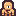
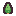
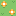

Gerakkan Player dengan WASD / tombol panah. NPC (merah) mengejar Player (ungu) memakai algoritma pencarian yang dipilih. Aktifkan animasi wavefront untuk melihat bagaimana node di-expand kontur demi kontur, mirip demo "UCS expands equal-cost contours".
WASD / Panah untuk menggerakkan Player.

NPC (musuh)
Pohon (tidak bisa dilewati, 2 varian acak)
Rumput (3 varian acak)Menampilkan node yang di-expand secara bertahap, satu kontur cost (g, atau g+h untuk A*) per langkah.
Cara main: gerakkan Player, tekan "Start NPC Chase" agar NPC otomatis mengejar setiap kali Player bergerak satu langkah. Klik "Run Pathfinding" untuk menghitung ulang jalur dari NPC ke Player tanpa menggerakkan siapa pun.
Tentang animasi wavefront: setiap kali pencarian baru dijalankan, wave otomatis direset. Tekan "Play" untuk memutarnya otomatis, "Step" untuk maju satu kontur setiap klik, atau "Reset Wave" untuk mengulang dari awal tanpa menjalankan pencarian baru.